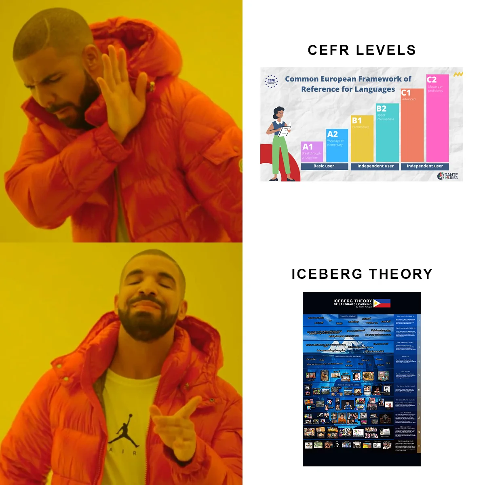

Polyglot Papers · Aljohn Polyglot
Levels only tell me so much.
Someone once laughed when I couldn't name my “level” in French. I still can't. I remember conversations, references, and the moment a joke finally makes sense far more clearly than any letter on a scale.
An interactive essay about fluency, culture, memory, and the knowledge hiding under every conversation.
Levels are the tip. Life is underneath.
The idea of a language “level” has always felt strangely distant from the way I learn. I never studied French through formal classes or exams. I still have to pause and remember whether A or C comes first, which is ridiculous for someone who studies languages constantly.
A lot of polyglot content ends with the learning story: which routine worked, how long it took, how someone reached a certain level, or how much someone “loves the culture.” My attention keeps moving toward what comes next—music, news, geography, memes, politics, television, and the random lore people carry around without explaining it.
Sometimes I make a reference in a French video and the English subtitles translate every word, yet the joke still makes no sense. What is missing is a decade of shared context. Once you can move through that world, people respond to you differently. A CEFR letter has no way to record that shift.
One language. Two different maps.
I use the CEFR when I need a shared description of performance. The Iceberg helps me notice the social memory, habits, and references surrounding that performance. Together they give me a more useful picture of progress.
| Question | CEFR | Iceberg Theory |
|---|---|---|
| What does it map? | What a learner can understand, produce, mediate, and do with language. | How language becomes entangled with behavior, shared references, memory, and worldview. |
| What is it good for? | Shared goals, curricula, assessment, and communicating a broad proficiency profile. | Planning immersion, noticing missing context, and widening the learner's idea of progress. |
| Where does it stop? | Belonging, cultural intimacy, and knowledge of particular communities remain outside the certificate. | The model offers perspective. It supplies no score, fixed sequence, or claim to insider status. |
Treat the Iceberg as a compass for learning. It was designed to widen the learner's attention. Proficiency measures still do their own job; this model names the context, memory, and relationships that sit beyond their scope.

The ten levels of the Iceberg Theory of Language Learning
The Survival
CEFR A · The first words that get you through the door.
Simple words and phrases can be learned in hours. They help you greet someone, order food, ask for directions, and get through a short exchange. This first foothold matters because it gives you somewhere to begin.
- oo
- hindi
- salamat
- saan ka?
- magkano ’to?
Open field notes
- What develops
- Reliable, rehearsed exchanges tied to immediate needs.
- What is still missing
- Flexibility when the reply departs from the expected script.
- Practice beneath the phrase
- Repeat the same task with different speakers, speeds, settings, and outcomes.
The Functional
CEFR B · Grammar, needs, preferences, and ordinary conversation.
You can construct sentences, explain what you are doing, and take part in everyday life. The system works, although much of the texture a native speaker hears around those sentences is still faint.
- Nasaan ang palikuran?
- Nagbabasa ako ng aklat.
- Nag-aaral ako ng wika.
Open field notes
- What develops
- Connected speech about routines, experiences, preferences, and plans.
- What is still missing
- Register, timing, and the social weight carried by equally grammatical choices.
- Practice beneath the phrase
- Retell one event to a friend, an elder, and a formal audience; notice what changes.
The Mastery
CEFR C · Precision, abstraction, humor, irony, and implied meaning.
This is near-native proficiency on a technical level. You can argue, joke, soften a sentence, and hear the different weight carried by two apparently similar expressions. It is an enormous achievement, located at the most visible edge of the model.
- Uy, seryoso ka ba?
- Traffic sa EDSA kanina.
- Ang ganda naman dito!
Open field notes
- What develops
- Precision, range, inference, and control across demanding situations.
- What is still missing
- Local history and shared memory still have to be learned.
- Practice beneath the phrase
- Pair complex language work with long-form local media and conversations about its assumptions.
The Code
Under the surface · The shorthand textbooks leave out.
This layer holds slang, filler, abbreviation, and rhythm: the loose language of people talking among themselves. Using it well means hearing the group, its timing, and the relationships inside it.
- charot
- jowa
- astig
- lodi
- ge
- tara!
Open field notes
- What develops
- An ear for register, code-switching, fillers, compression, and playful rule-breaking.
- The danger
- Copied slang can sound forced when relationship, age, place, or timing is wrong.
- Practice beneath the phrase
- Record who uses an expression, with whom, in what setting, and for what effect.
The Action
Culture in motion · How words, gestures, and rituals travel together.
Language is embodied. It lives in courtesy, gesture, celebration, food, family, and ritual: using po and opo, doing the mano, lip-pointing, surviving videoke night, bringing home pasalubong, or understanding a harana.
Open field notes
- What develops
- Turn-taking, gesture, distance, hospitality, deference, repair, and ritual competence.
- The danger
- A behavior has no single meaning outside its relationship and situation.
- Practice beneath the phrase
- Observe before imitating; ask trusted people how an action changes across contexts.
The Shared World: Factual
Deep lore · The background facts nobody stops to explain.
Baguio is cold. EDSA means traffic. Tondo carries a reputation for toughness. Everyone knows PBB, and everyone knows what comes after “Tito, Vic.” Together, references like these form society's assumed coordinates.
Open field notes
- What develops
- A working map of places, institutions, public figures, media, and historical reference points.
- Why it matters
- Speakers can compress whole explanations into a name, place, date, or catchphrase.
- Practice beneath the phrase
- Build a living reference map from news, maps, interviews, questions, and the stories people attach to them.
The Shared World: Narrative
The living present · Media, politics, personalities, and stories moving now.
This layer lets you follow a national conversation in real time: what people watched last night, the public figure everyone is discussing, the joke already mutating into a meme, or the political frame hidden inside a throwaway sentence.
Open field notes
- What develops
- Recognition of recurring plots: heroes, betrayals, aspirations, wounds, and contested memories.
- Why it matters
- Facts become meaningful through the stories communities tell about what those facts mean.
- Practice beneath the phrase
- Compare how the same event is framed by generations, regions, communities, and media outlets.
The Nostalgia
Collective memory · Facts that became emotionally charged touchstones.
Mara Clara, Rico Yan, AlDub, early PBB, Meteor Garden: research can tell you what they were. The feeling of a generation remembering them together arrives through people. Today's narrative becomes tomorrow's nostalgia.
Open field notes
- What develops
- Emotional recognition of media, sounds, objects, and public moments carried across time.
- Why it matters
- Nostalgia explains why a reference can feel intimate even to people who did not witness its origin.
- Practice beneath the phrase
- Revisit older media with people who remember it and listen to the memories around the artifact.
The Expertise
Niche depth · Knowledge built inside a particular field or community.
Deep fandoms, obscure history, academic study, subcultures, Martial Law archives, or the full 1987 Constitution belong here. Dedication can take a learner very far into one domain. Cultural membership follows many other paths as well.
Open field notes
- What develops
- Specialized vocabulary, genre control, disciplined knowledge, and original contribution.
- Its limit
- Expertise stays domain-specific. Every expert speaks from a particular community and viewpoint.
- Practice beneath the phrase
- Choose one domain, follow its primary voices, make work inside it, and invite correction.
The Unspoken Code
The soul · Emotional truths carried through experience.
Bahala na. Utang na loob. Pakikisama. Hiya. Family first. Bayanihan. A dictionary can offer a gloss for each one. Long immersion reveals the worldview and emotional consequences they carry.
At this depth, fluency feels like recognition.
Open field notes
- What develops
- Intuitive sensitivity to values, obligations, silences, contradictions, and emotional consequences.
- The ethical limit
- Every learner's understanding remains partial, situated, and accountable to people.
- Practice beneath the phrase
- Stay in relationships long enough to be surprised, corrected, and changed by what words struggle to explain.
A theory to use, question, and test.
The Iceberg Theory is a conceptual model with no psychometric validation. Its ten levels work as lenses for attention, and learners will encounter them in different orders. Someone may have deep family knowledge and limited formal literacy; another person may have advanced academic proficiency and little local context.
Culture is plural. Any “unspoken code” consists of overlapping patterns shaped by region, generation, class, community, migration, and individual life. The model earns its value when it produces humility, closer attention, and better questions.
The subtitles are correct. The context is missing.
This is why some of my videos feel incomprehensible when you only know the surface. In French, I might casually reference a French YouTube meme. In Indonesian, I might invoke a song almost everyone there knows. English subtitles can translate the sentence; the shared world behind it has to be learned elsewhere.
My website follows the same logic. I collect the media, music, television, film, people, and places that genuinely belong to my life. My Spanish page contains few textbook resources because textbooks barely appear in the Spanish-speaking world I actually inhabit.
“I don't just speak the languages. I live in them.”
Final stop · Belonging
Some say I'm already good. They only see the tip.
That is why I expect to keep studying even when other people think I am already good. Real fluency lives under the surface, and the iceberg is too deep for one lifetime. Passing an exam may mark a real milestone; belonging grows slowly through attention, memory, relationships, and time.